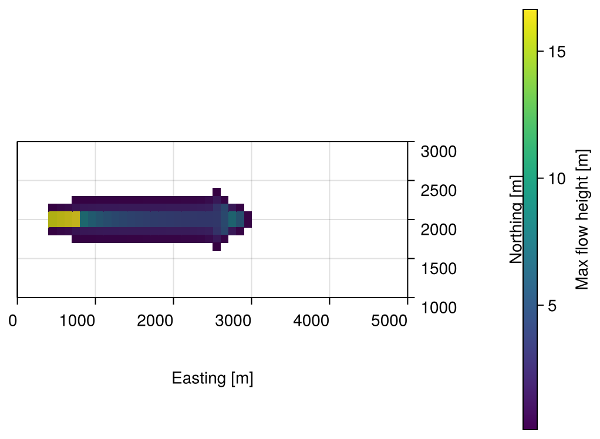
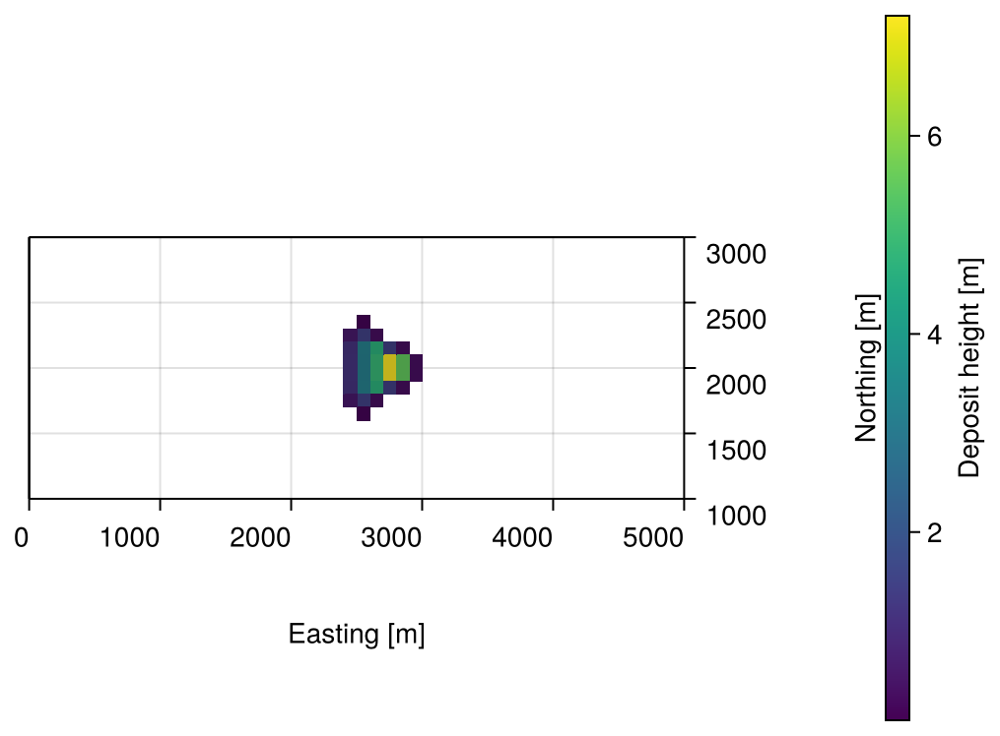

Getting Started
First steps are always small.
This walkthrough runs a full simulation end to end: we release a mass of material on a slope and watch it slide downhill and come to rest as it spreads out. We use the "synthetic slope" example bundled with the repository (examples/synthetic_slope/), so all code below can be copied and run as is.
Initializing the library
using GlissADe
init(threads = true, stats = false, plots = false, implicit = true)threads = true lets us use multiple threads if we start Julia with more than one (julia --project -t 8 ...). implicit = true selects the implicit (SIMPLE) solver, the one we use throughout this walkthrough.
Parsing and precomputing the mesh
points, faces = parsemesh(
"./examples/synthetic_slope/geometry/points",
"./examples/synthetic_slope/geometry/faces",
"./examples/synthetic_slope/geometry/faceLabels",
)
Cells = preprocess(points, faces, Float64, comp_neighbours = true)preprocess computes each cell's geometry (centers, areas, normals, neighbours) once and caches it. See Precomputing Geometry for what's computed and when it's safe to skip recomputation.
Setting the release area
We set the release from a depth raster, a grid of thickness values covering the domain. We parse it, remap it onto the mesh, and convert it to the mesh-normal thickness the solver expects:
raster = parseEsriAscii("./examples/synthetic_slope/release_depth.asc")
h0_vertical = remapRasterToMesh(raster, Cells)
h0_normal = verticalToNormalThickness(h0_vertical, Cells)
initializeGeometry(Cells, 1500.0, h0 = h0_normal, u0 = [0.0, 0.0, 0.0])This assigns the raster's thickness, a material density of 1500 kg/m³, and zero initial velocity to every cell. See Defining a Release Area from a Depth Raster for how the raster is read and remapped.
Using custom rheology models
We now define a rheology model for the friction. GlissADe supports swapping in any model whose basal stress term $\tau_b$ is orthogonal to the flow velocity, i.e. $\tau_b \cdot \bar{u} = 0$ (in practice, this means non-entraining models). We use the Voellmy model:
\[\tau_b = \mu\;p_b\;\frac{\bar{u}}{\bar{u} + u_0} + \frac{\rho g}{\zeta}\lvert \bar{u}\rvert \bar{u}\]
The library treats basal friction implicitly, so a custom model is a function returning the implicit coefficient $\mathcal{A}$ such that $\tau_b = \mathcal{A}\bar{u}$, with a fixed signature. We give the model's two free parameters, the dry-friction coefficient $\mu$ and the turbulent-drag coefficient $\xi$, their own names within the function body, so they're clear rather than being magic numbers:
import LinearAlgebra: norm2
function voellmy_basal_stress(Cell, h, vel, pb, alpha, zeta, rho)
mu = 0.16 # dry-friction coefficient
xi = 1150.0 # turbulent-drag coefficient
vel_mag = norm2(vel)
vel_inv = 1.0 / (vel_mag + 1e-4)
return vel_inv * mu * pb + rho * 9.81 * vel_mag / xi
endh, vel, and pb are the values of the variables at a given face, and Cell gives us that face's full precomputed data (its geometry along with its current thickness, velocity, and basal pressure). alpha, zeta, and rho are passed in from the Solution we build next.
Pass the function to Solution as basal_stress, as shown next.
Setting up the solver and running a simulation
We collect the model parameters and solver settings into a Solution, then build a Solver from it:
solution = Solution(
alpha = 0.5, # Coefficient for pressure thickness-averaging
zeta = 1.25, # Coefficient for velocity thickness-averaging
rho = 1500.0, # Material density
alpha_p = 0.5, # Under-relaxation for pressure
alpha_u = 0.5, # Under-relaxation for velocity
alpha_h = 0.5, # Under-relaxation for thickness
p_MAX_RESIDUAL = 1e-5, # Maximum allowed residual for the pressure constraint
h_MAX_RESIDUAL = 5e-1, # Maximum allowed residual for the thickness equation
u_MAX_RESIDUAL = 5e-1, # Maximum allowed residual for the momentum equation
MAX_ITERS = 250, # Maximum iterations per timestep
MIN_ITERS = 200, # Minimum iterations per timestep
h_clip = 0.0, # Clip the thickness to 0 if h < h_clip
h_min = 1e-3, # Minimum height to be considered wet
Cells = Cells, # Precomputed geometry and initial conditions
location = "./solution", # Folder to store the intermediate VTK files
points = points, # Vertices of the mesh
faces = faces, # Connectivity list of the mesh
basal_stress = voellmy_basal_stress, # Custom rheology model, defined above
)
solver = Solver(solution)alpha and zeta here are unrelated to mu and xi from the rheology model above: they set how pressure and velocity are averaged through the flow's thickness, not how friction behaves.
Then we solve:
time_steps, sol = solve(solver, (0.0, 4000.0), saveat = 2.0, Cₘ = 4.5, rtol = 1e-4)The second argument is the time span we simulate, in seconds. The solver uses adaptive timestepping based on the Courant number; saveat sets the uniform interval at which we save the solution regardless, and Cₘ caps the Courant number allowed per step.
Post-processing
We write the solution to VTK files, ready to open in ParaView, with writeToVTK:
writeToVTK(solution.location, sol, points, faces)
resetCells(Cells) # Reset all cells to zero thickness and velocity, ready for another runwriteToVTK deletes the contents of the given directory before saving the new files. It's recommended to use an empty directory to avoid losing other data.
Or, to skip ParaView entirely, we can render the final state directly in Julia with plotmesh. This needs a Makie backend, for example CairoMakie, installed in our own base Julia environment rather than the project's own. We only need to do this once, and we can do it in our current Julia session by switching to the base environment, adding the package, then switching back to the project:
import Pkg
Pkg.activate() # our base environment
Pkg.add("CairoMakie")
Pkg.activate(".") # back to the GlissADe.jl projectusing CairoMakie
h_final = [sol[end][5 * i - 4] for i in eachindex(Cells)]
plotmesh(Cells; field = h_final)See Visualizing a Mesh and Animating Mass Flow for more. Here's what we get from a full run, the mass's maximum extent over the whole simulation and where it finally comes to rest:


examples/synthetic_slope/synthetic_slope_example.jl renders these two images itself, with a top-down camera and thin flow masked out for a cleaner picture.
And that's it. We've solved the free surface flow equations and simulated a gravity-driven shallow flow on our geometry!
Differentiation
We can wrap every step above in a function and differentiate it with respect to any of its inputs, such as the release thickness, material density, or a rheology parameter, using automatic differentiation. See Differentiating a Simulation for a worked example.